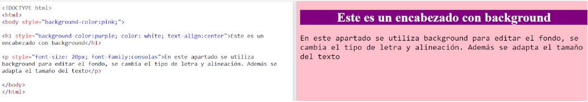

"El atributo HTML style se usa para agregar estilos a un elemento, como color, fuente, tamaño y más."
La configuración del estilo de un elemento HTML se puede hacer con el style atributo.
El atributo HTML style tiene la siguiente sintaxis:
" tagname style="property:value;"
Con el atributo style puedes:
Con la información anterior se han hecho ejercicios con respecto a este apartado, por lo cual se presenta uno:
En el siguiente script se configura un color de fondo, desde el cuerpo utilizando el elemento “style=background-color”. Por consiguiente, se le añade un estilo al etiqueta h1 en donde se le pone el fondo morado (background-color), su color de fuente cambia (color) y su alineamiento es centrado (text-align). Por último se le vuelve a agregar un estilo pero en esta ocasión es a la etiqueta p, se le agranda la letra al párrafo (font-size: 20px) y se le cambia el tipo de fuente (font-family: consolas).